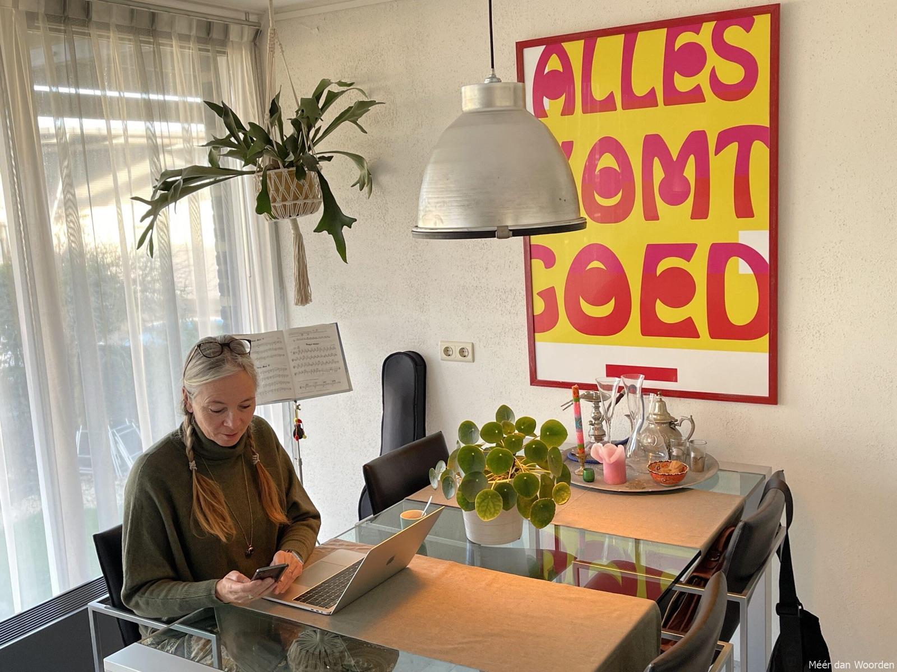

Wie ben ik...
BIOGRAFIE
‘Mijn naam is Marjan de Kort, ik ben geboren in Breda, opgegroeid in Zeeland. Op 1 mei 2000 startte ik met Méér dan Woorden, de bedrijfsnaam voor mijn werk als zelfstandig tekstschrijver en fotograaf. Ruime opleiding en ervaring in de communicatie en (bedrijfs)journalistiek leerden mij dat tekst en beeld niet zonder elkaar kunnen. Goede teksten en afbeeldingen nodigen uit tot lezen én kijken, ze maken nieuwsgierig, ze spreken tot de verbeelding. Hiervoor kruip ik graag in de huid van de ontvanger én in die van de afzender. Zo kan ik een brug slaan tussen beiden, een beeld schetsen, een reactie oproepen. Beeldspraak is niet voor niets het motto van mijn werk.’
INSPIRATIE
Natuurlijk heb ik als tekstschrijver en fotograaf behoefte aan inspiratie. Die haal ik uit wind en water, licht en lucht. Waarschijnlijk voel ik me daarom ook zo thuis in Zeeland. Maar vooral mensen inspireren me en de dingen die ze maken. Of het nu muziek is of literatuur, meubels of architectuur, kunst of zelfs natuur. Hun passie en bewogenheid, dat zijn de elementen die me boeien. Wat denken mensen, wat voelen ze, wat beweegt ze, wat raakt ze. En waarom? Misschien is dat stiekem wel gewoon mijn eigen zoektocht naar herkenning en verbinding…’

Nieuwsgierig?
Wil je meer weten, bekijk dan eens mijn profielpagina’s op TekstNet, Linkedin en Facebook of lees interessante artikelen, nieuwsberichten en verhalen in mijn blog.